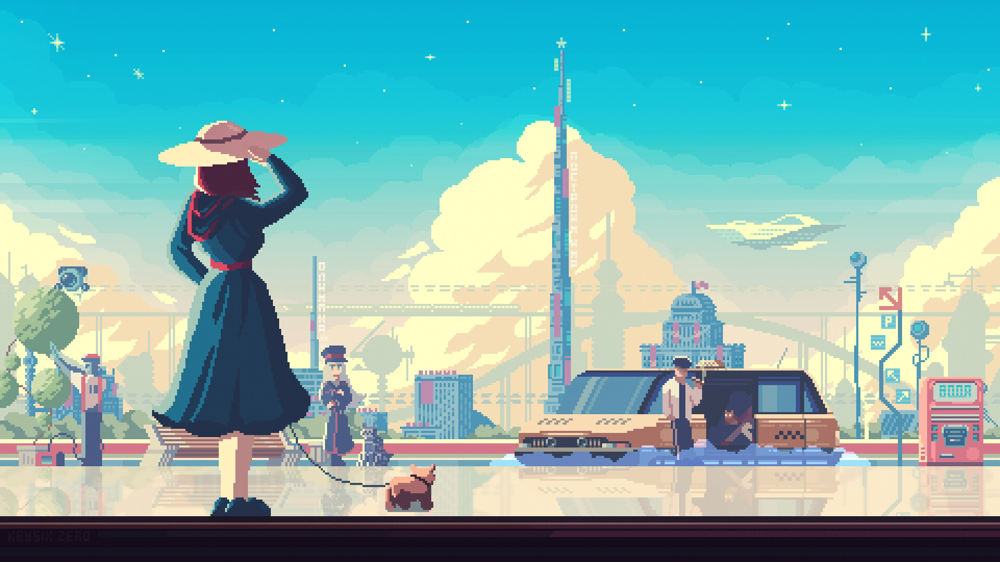

Welcome to WebLeap! This website was made with HTML, CSS and Effort! Here you can find out more about me and stuff I like. I'm planning to add new features and content in the future, so stay tuned! Feel free to explore my Website!